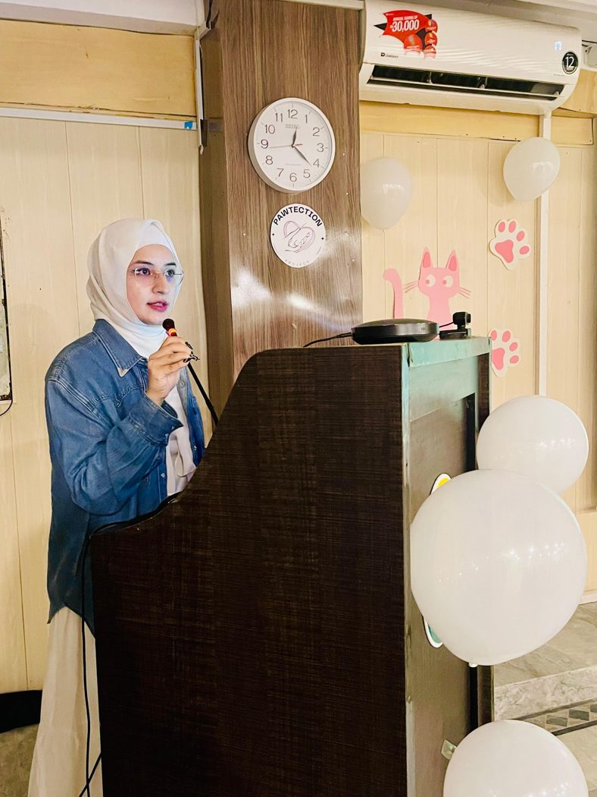
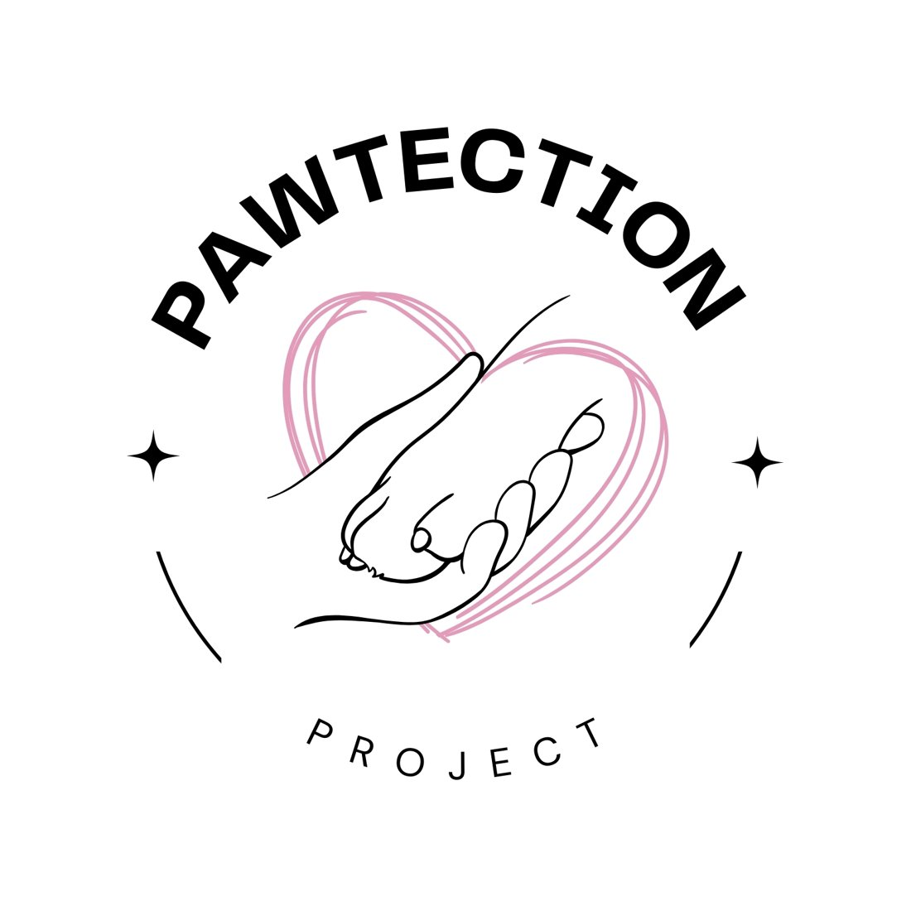
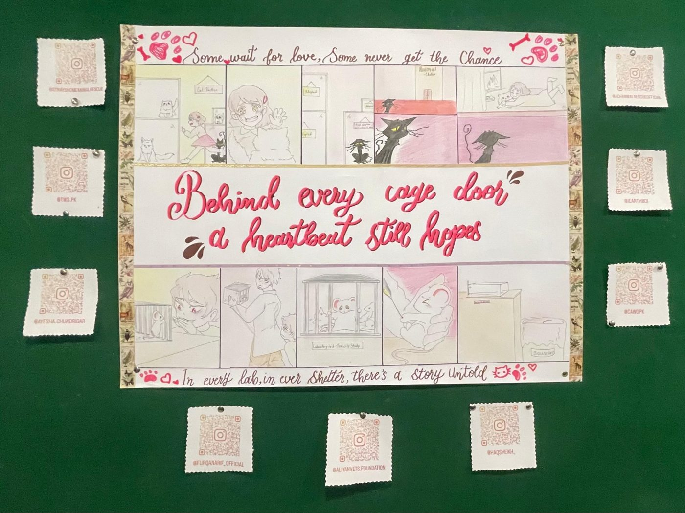
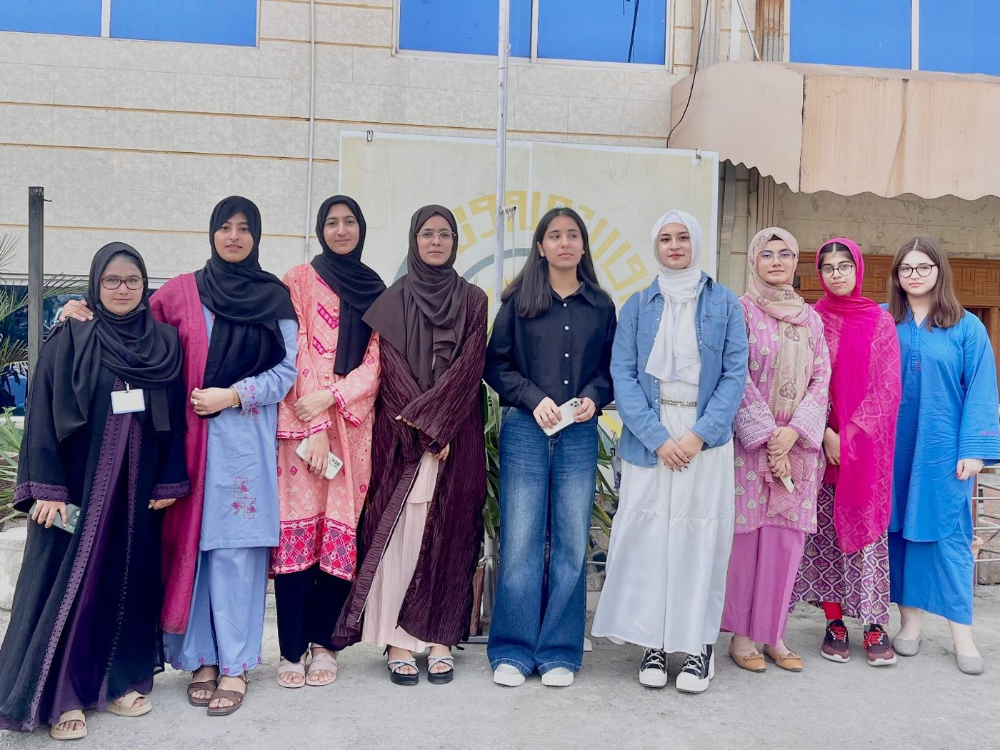
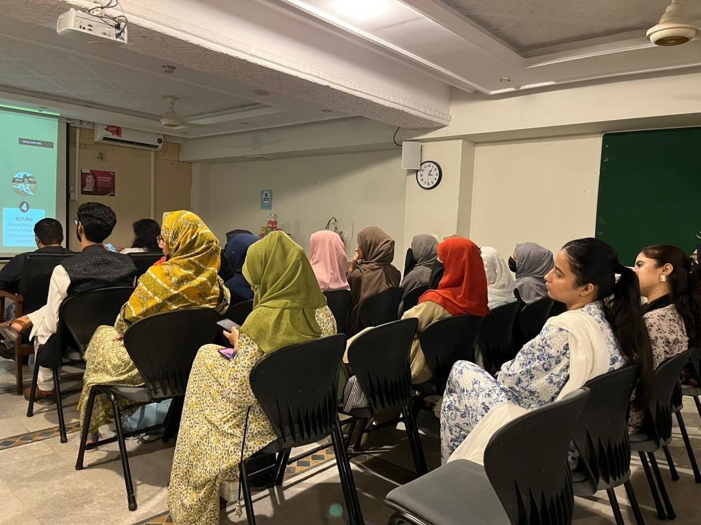
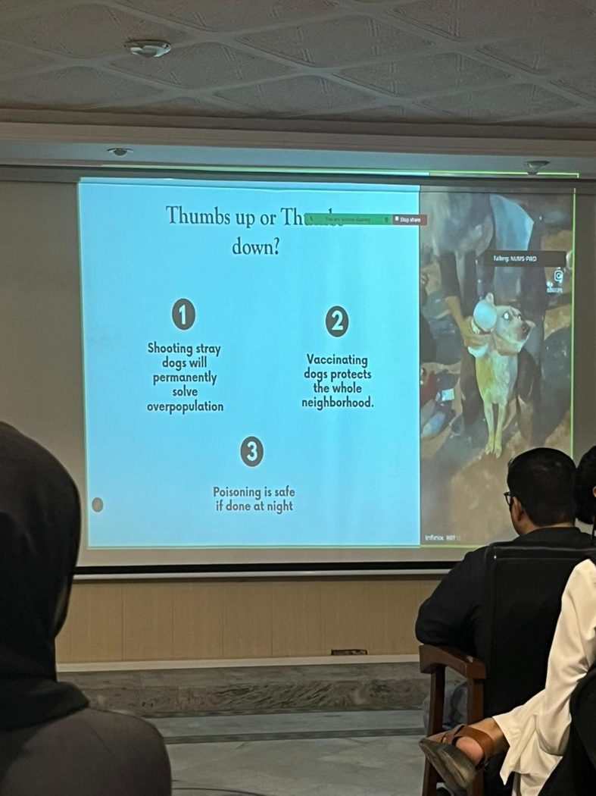
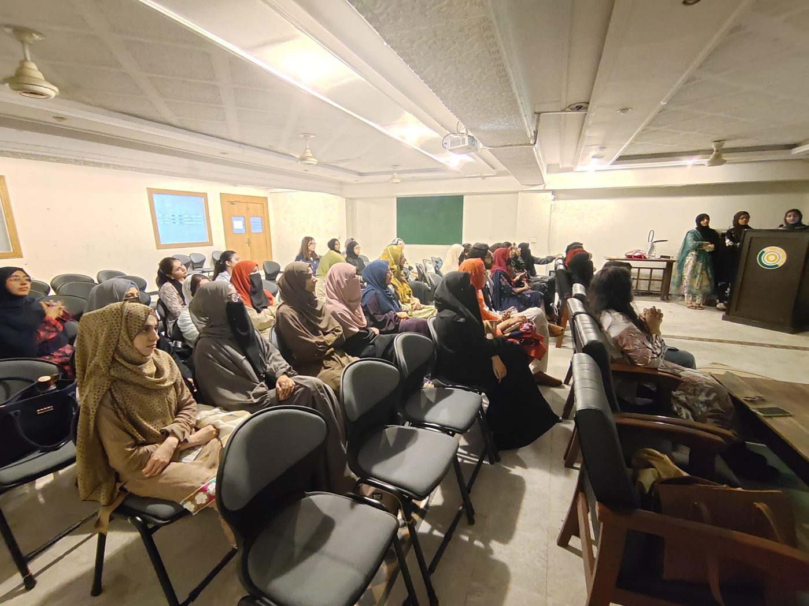

Research beyond the lab.
Leading a team, communicating public-health information, and learning to collaborate across disciplines.


Original project identityProject Pawtection
Educate, Empower, and Protect the Voiceless.
As founder/group leader of the Pawtection initiative in the Millennium Fellowship context, I coordinated awareness and educational activities addressing rabies prevention, TNVR, responsible interaction with stray animals and humane community responses.
From planning to participation.
Beyond Fear: Living Kindly with Strays
A student awareness session covering humane treatment, population-management myths, TNVR and safe coexistence, with invited rescue-organization contributors and interactive activities.
Rabies Awareness & Community Safety
Education on rabies transmission, prevention, immediate response after animal bites and community rescue resources, supported by interactive displays and activities.
Moments from Pawtection.
Selected photographs from the two 2025 awareness sessions and the original project materials.





Photographs are from project documentation. Confirm group and participant permissions before publishing the website publicly.
Follow @pawtection_pk
Scan the QR code or open the project account for original campaign posts, event highlights and educational resources.
Visit Pawtection on Instagram ↗Learning and service.
Aspire Leaders Program
Completed the Aspire Institute's 2025 leadership-development program (40 hours of coursework), covering critical thinking, communication and social impact.
EcoCycle
Contributed as a team member to menstrual-health awareness and sustainable reusable menstrual-product activities, including educational and community outreach.
Millennium Fellowship
Experience in project planning, presentation design, collaboration with peers, educational sessions and communication with community partners.